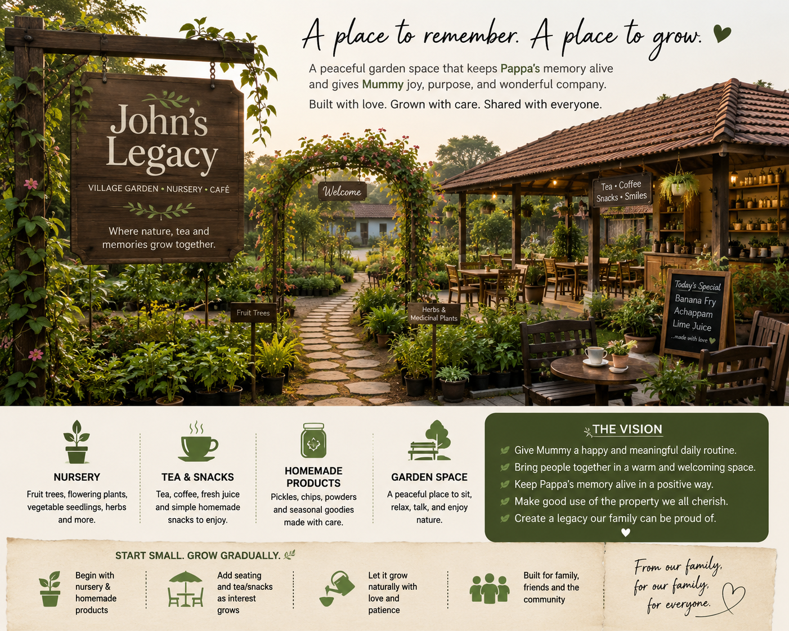
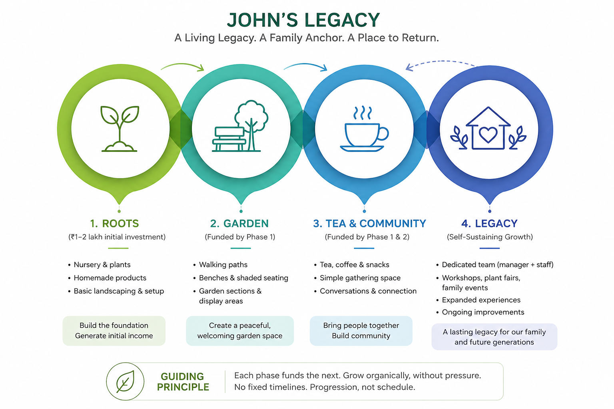

A Living Legacy • A Family Anchor • A Place to Return

John's Legacy is a family project rooted in memory, nature, and community.
It is inspired by Pappa's life, Mummy's journey, and our desire to create something meaningful that can grow slowly over time.
Start small. Grow organically. No pressure.

This is not primarily a business venture.
The goal is to create a place that honors Pappa's memory, supports Mummy's wellbeing, brings people together, and remains a lasting connection for future generations.